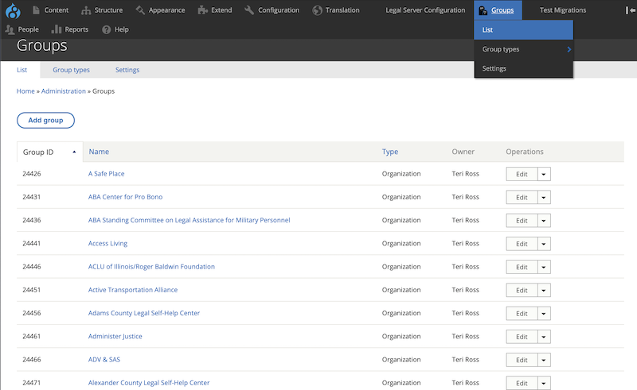
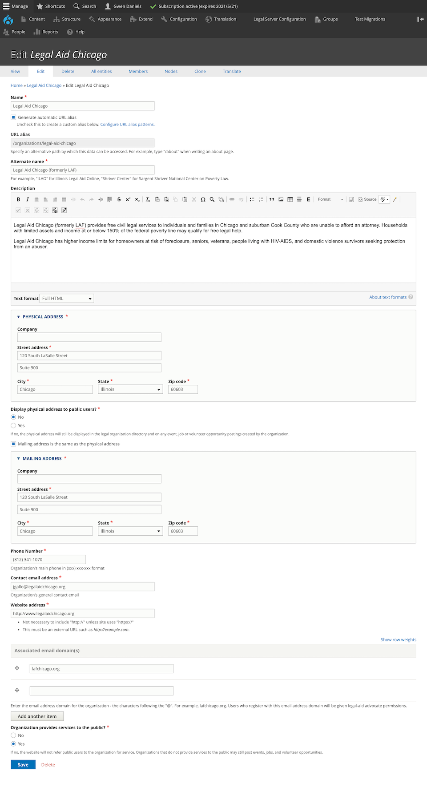

Adding/editing organizations
Organizations can only be added under Groups (not under Content). This is because the website relies on group management to bind organizations, locations, services, triage rules, intake settings, and organization staff members together and to provide the correct organizational permissions to select organization staff.
Adding an organization
Note
Only ILAO staff can add an organization. Please check our guidelines before adding an organization to the system.
To add an organization:
Click on Add Group
Fill out the organization profile which requires:
A name. This name must be unique in the system
An alternate name, if one exists for the organization
An optional description. This is highly encouraged as this may be automatically displayed on the website or in structured content.
A physical address
A mailing address. There is an option to copy from physical address
A phone number
A contact email address
A website address
Whether the organization provides services to the public. Organizations that do not provide services to the public may still be included in the site but will not be shown in referrals.
Whether to show the physical address to public users. If this is set to no, the address will not show in referrals.
ILAO staff only have an option to associate an email domain with the organization. This is used to auto-approve users with the legal aid member role. It is not retroactive.
Warning
Adding an email domain will add that domain to the list of domains to automatically approve future users. If an organization changes their email domain, existing users will still need to be manually updated. Do not add an email domain for organizations whose members should not be given legal aid permissions.
Todo
Verify that the physical address does not show in referrals.
Editing an organization
Note
Organizations can only be edited by ILAO staff or by members of the specific organization who have the Organization manager role in the group.
The edit form is the same as the add form.
Staff users
Edit an organization by going to Groups and editing from the list.
Organization managers
Edit an organization by going to their dashboard and selecting Edit organization profile in the “You can” block.